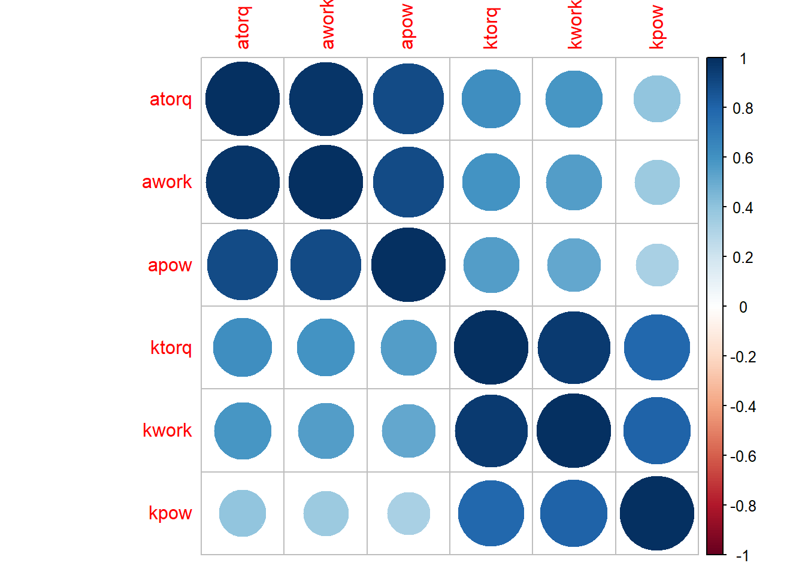

Chapter 7 General statistics
Download and load libraries
Import data
Let’s load the 3 files from data folder into the workspace again.
subjdat <- read_delim (file = "data/SubjectData.txt", # file name
delim = "\t", # file separater
col_names = TRUE) # the first row of the data is a header row
scalfac <- read_delim (file = "data/ScaleFact.txt", # file name
delim = "\t", # file separater
col_names = TRUE) # the first row of the data is a header row
strn <- read.xlsx (xlsxFile = "data/STRENGTH.xlsx")Rename column names
# Method 1:
colnames (strn) <- tolower(colnames (strn)) # captials to lower caps
# Method 2: Define new names
newnames <- c("atorq", "awork", "apow", "ktorq", "kwork", "kpow")
# [7:12] tells the system the column numbers you want to replace. In this instance it is columns 7 to 12
colnames (strn)[7:12] = newnames7.1 Summarizing your data
The Solution exhibits the summary of a vector. The 1st Qu. and 3rd Qu. are the first and third quartile, respectively. Having both the median and mean is useful because you can
quickly detect skew.
## subj group time side
## Min. : 1.00 Length:992 Length:992 Length:992
## 1st Qu.: 8.00 Class :character Class :character Class :character
## Median :17.00 Mode :character Mode :character Mode :character
## Mean :16.61
## 3rd Qu.:25.00
## Max. :32.00
## set rep atorq awork apow
## Min. :1.0 Min. :1.00 Min. : 33.00 Min. :17.00 Min. : 18.00
## 1st Qu.:1.0 1st Qu.:1.75 1st Qu.: 67.00 1st Qu.:32.00 1st Qu.: 60.51
## Median :1.5 Median :2.50 Median : 82.00 Median :39.00 Median : 74.50
## Mean :1.5 Mean :2.50 Mean : 83.94 Mean :40.03 Mean : 76.01
## 3rd Qu.:2.0 3rd Qu.:3.25 3rd Qu.: 99.00 3rd Qu.:47.00 3rd Qu.: 90.00
## Max. :2.0 Max. :4.00 Max. :145.00 Max. :72.00 Max. :151.00
## ktorq kwork kpow
## Min. : 75.0 Min. : 78.0 Min. : 24.0
## 1st Qu.:120.8 1st Qu.:124.0 1st Qu.:106.0
## Median :146.0 Median :145.0 Median :134.0
## Mean :150.2 Mean :151.8 Mean :135.8
## 3rd Qu.:175.0 3rd Qu.:172.0 3rd Qu.:165.0
## Max. :322.0 Max. :324.0 Max. :328.0# Tidy way
strn %>%
summarize (Mean = mean (atorq, na.rm = T),
Median = median (atorq, na.rm = T),
Max = max (atorq, na.rm = T),
Min = min (atorq, na.rm = T),
Sd = sd (atorq, na.rm = T),
Iqr = IQR (atorq, na.rm = T),
quant25 = quantile (atorq, probs = 0.25, na.rm = T),
quant75 = quantile (atorq, probs = 0.75, na.rm = T))## Mean Median Max Min Sd Iqr quant25 quant75
## 1 83.94082 82 145 33 22.23734 32 67 997.2 Finding the correlation between variables
Applicable only to numeric variables, e.g. between height and weight
M <- cor(strn[, c(7:12)]) # if you are interested in correlation between columns 7 to 9, change it to [7:9]
corrplot(M, method="circle")
## atorq awork apow ktorq kwork kpow
## atorq 1.0000000 0.9774470 0.8962872 0.6178820 0.5823672 0.3975232
## awork 0.9774470 1.0000000 0.8920214 0.5954282 0.5573902 0.3642013
## apow 0.8962872 0.8920214 1.0000000 0.5554066 0.5152769 0.3254336
## ktorq 0.6178820 0.5954282 0.5554066 1.0000000 0.9524378 0.7824349
## kwork 0.5823672 0.5573902 0.5152769 0.9524378 1.0000000 0.8075578
## kpow 0.3975232 0.3642013 0.3254336 0.7824349 0.8075578 1.00000007.3 Summarizing your data at a group level
If you have two or more groups per variable, and multiple variables, and you want a summary at each combination of factors.
# grouped summaries
strn %>%
group_by(group, time) %>%
summarize (Mean = mean (atorq, na.rm = T),
Median = median (atorq, na.rm = T),
Max = max (atorq, na.rm = T),
Min = min (atorq, na.rm = T),
Sd = sd (atorq, na.rm = T),
Iqr = IQR (atorq, na.rm = T),
quant25 = quantile (atorq, probs = 0.25, na.rm = T),
quant75 = quantile (atorq, probs = 0.75, na.rm = T))## `summarise()` regrouping output by 'group' (override with `.groups` argument)## # A tibble: 4 x 10
## # Groups: group [2]
## group time Mean Median Max Min Sd Iqr quant25 quant75
## <chr> <chr> <dbl> <dbl> <dbl> <dbl> <dbl> <dbl> <dbl> <dbl>
## 1 G POST 95.4 95 145 56 19.8 26.2 80 106.
## 2 G PRE 72.7 70.5 122 33 17.0 21 61 82
## 3 T POST 92.8 91.5 140 45 23.1 32.5 77.8 110.
## 4 T PRE 74.9 76 124 33 18.7 26.2 60.8 877.4 Testing the Mean of a Sample (t Test)
You have a sample from a population. Given this sample, you want to know if the mean of the population could reasonably be a particular value m.
Apply the t.test function to the sample x with the argument mu = m:
The output includes a p-value. Conventionally, if p < 0.05 then the population mean is unlikely to be m, whereas p > 0.05 provides no such evidence.
If your sample size n is small, then the underlying population must be normally distributed in order to derive meaningful results from the t test. A good rule of thumb is that “small” means n < 30.
The t test is a workhorse of statistics, and this is one of its basic
uses: making inferences about a population mean from a sample. The
following example simulates sampling from a normal population with mean
μ = 100. It uses the t test to ask if the population mean could be
95, and t.test reports a p-value of 0.005:
##
## One Sample t-test
##
## data: x
## t = 3.5763, df = 74, p-value = 0.0006187
## alternative hypothesis: true mean is not equal to 95
## 95 percent confidence interval:
## 97.39521 103.42227
## sample estimates:
## mean of x
## 100.4087The p-value is small and so it’s unlikely (based on the sample data) that 95 could be the mean of the population.
Informally, we could interpret the low p-value as follows. If the population mean were really 95, then the probability of observing our test statistic (t = 2.8898 or something more extreme) would be only 0.005. That is very improbable, yet that is the value we observed. Hence we conclude that the null hypothesis is wrong; therefore, the sample data does not support the claim that the population mean is 95.
In sharp contrast, testing for a mean of 100 gives a p-value of 0.9:
##
## One Sample t-test
##
## data: x
## t = 0.27026, df = 74, p-value = 0.7877
## alternative hypothesis: true mean is not equal to 100
## 95 percent confidence interval:
## 97.39521 103.42227
## sample estimates:
## mean of x
## 100.4087The large p-value indicates that the sample is consistent with assuming a population mean μ of 100. In statistical terms, the data does not provide evidence against the true mean being 100.
A common case is testing for a mean of zero. If you omit the mu
argument, it defaults to zero.
7.5 Comparing the Means of Two Samples
You have one sample each from two populations. You want to know if the two populations could have the same mean.
Perform a t test by calling the t.test function:
By default, t.test assumes that your data are not paired. If the
observations are paired (i.e., if each xi is paired with one
yi), then specify paired=TRUE:
In either case, t.test will compute a p-value. Conventionally, if
p < 0.05 then the means are likely different, whereas p > 0.05
provides no such evidence:
If either sample size is small, then the populations must be normally distributed. Here, “small” means fewer than 20 data points.
If the two populations have the same variance, specify
var.equal=TRUEto obtain a less conservative test.
We often use the t test to get a quick sense of the difference between two population means. It requires that the samples be large enough (i.e., both samples have 20 or more observations) or that the underlying populations be normally distributed. We don’t take the “normally distributed” part too literally. Being bell-shaped and reasonably symmetrical should be good enough.
A key distinction here is whether or not your data contains paired observations, since the results may differ in the two cases. Suppose we want to know if coffee in the morning improves scores on SATs. We could run the experiment two ways:
Randomly select one group of people. Give them the SAT twice, once with morning coffee and once without morning coffee. For each person, we will have two SAT scores. These are paired observations.
Randomly select two groups of people. One group has a cup of morning coffee and takes the SAT. The other group just takes the test. We have a score for each person, but the scores are not paired in any way.
Statistically, these experiments are quite different. In experiment 1, there are two observations for each person (caffeinated and decaf) and they are not statistically independent. In experiment 2, the data are independent.
If you have paired observations (experiment 1) and erroneously analyze them as unpaired observations (experiment 2), then you could get this result with a p-value of 0.3:
##
## Welch Two Sample t-test
##
## data: x and y
## t = -0.95364, df = 197.97, p-value = 0.3414
## alternative hypothesis: true difference in means is not equal to 0
## 95 percent confidence interval:
## -46.42359 16.15942
## sample estimates:
## mean of x mean of y
## 1053.733 1068.865The large p-value forces you to conclude there is no difference between the groups. Contrast that result with the one that follows from analyzing the same data but correctly identifying it as paired:
##
## Paired t-test
##
## data: x and y
## t = -18.08, df = 99, p-value < 2.2e-16
## alternative hypothesis: true difference in means is not equal to 0
## 95 percent confidence interval:
## -16.79278 -13.47139
## sample estimates:
## mean of the differences
## -15.13208The p-value plummets to 2e-16, and we reach the exactly opposite conclusion.
7.6 Comparing the means of Two Samples Nonparametrically
If the populations are not normally distributed (bell-shaped) and either sample is small, consider using the Wilcoxon–Mann–Whitney test.
You have samples from two populations. You don’t know the distribution of the populations, but you know they have similar means. You want to know: Is one population’s mean different from the other?
You can use a nonparametric test, the Wilcoxon–Mann–Whitney test, which
is implemented by the wilcox.test function. For paired observations
(every xi is paired with yi), set paired=TRUE:
##
## Wilcoxon signed rank test
##
## data: x and y
## V = 151, p-value = 0.0961
## alternative hypothesis: true location shift is not equal to 0For unpaired observations, let paired default to FALSE:
The test output includes a p-value. Conventionally, a p-value of less than 0.05 indicates that the second population is different with respect to the first population, whereas a p-value exceeding 0.05 provides no such evidence.
When we stop making assumptions regarding the distributions of populations, we enter the world of nonparametric statistics. The Wilcoxon–Mann–Whitney test is nonparametric and so can be applied to more datasets than the t test, which requires that the data be normally distributed (for small samples). This test’s only assumption is that the two populations have the same shape.
In this recipe, we are asking: Is the second population shifted left or right with respect to the first? This is similar to asking whether the average of the second population is smaller or larger than the first. However, the Wilcoxon–Mann–Whitney test answers a different question: it tells us whether the central locations of the two populations are significantly different or, equivalently, whether their relative frequencies are different.
Learning check
Open up your
practice.Rmd. Run the code chunks you created in sequential order.Quickly generate a simple summary of the
strndata using thesummary ()function.Calculate the mean and standard deviation values of
aexttorqpergrouppertime, and assign this values to an object namesumm.